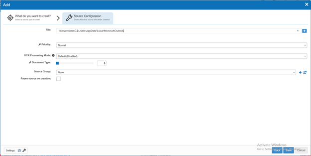

-
First ensure that your crawl account has read permissions to the .pst file that you
intend to crawl.
-
Navigate to Sources within NDC and click “add”, choose the option for “Outlook Mail
Archive”
-
The first filed that you will be prompted for is labeled “File” and requires the
network path to the share. Even if the .pst file has been moved locally to the NDC
server, you must still provide the network path as demonstrated below. You can add
multiple .pst’s in a single source by clicking the + at the end of the field.
-

-
Set OCR processing to on if you would like NDC to extract text from image files from the
.pst
-
Setting the priority of the source will determine how quickly it will be collected if
there are multiple sources that are all collecting at the same time.
-
Click “Save”